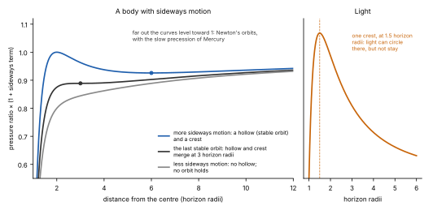
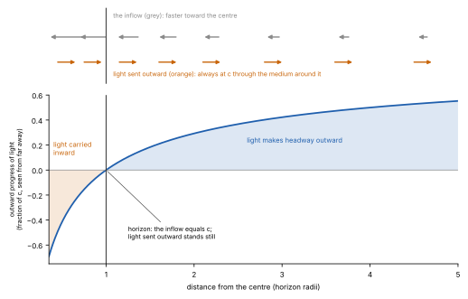

Library › The Unified Framework for the Graviton Pressure Theory
The Medium at Its Limits
Following the Inflow to the Speed of Light
About This Paper
Every mass takes in the medium. The medium flows toward it at \(v=\sqrt{2GM/r}\), faster the closer it comes, and the faster it flows the lower the active pressure it leaves: \(P/P_0 = 1 - v^2/c^2\) (Part 23).1 At the surface of the Earth the inflow is 11.2 kilometres a second and the pressure is lowered by about one part in a billion. Nothing in everyday life is near the limit.
This paper follows the inflow inward, past the Earth and the Sun, to the places where it is pushed toward its limit: the white dwarfs, the neutron stars, the orbits close to a black hole, and the horizon, where the inflow reaches the speed of light and the active pressure reaches zero. At each stage it asks the same questions, in the same order: how fast the inflow is there and what pressure it leaves; what that does to clocks, light and orbits; what holds matter up against it, and where that hold gives way; and what has been measured. The numbers for each stage are worked out in Part 24;2 this paper is about what happens at each one and why.
This is the second edition; what changed from the first is listed at the end. Claims are marked by their status, as the key shows.
25.1 One Quantity to Follow
Three things change together as the inflow speeds up, and each is set by the same ratio, \(P/P_0\):
Clocks. A clock is a structure of the medium’s waves, and it ticks more slowly as the medium streams through it. Compared with a clock far away, its rate is \(\sqrt{P/P_0}\) (Part 14).3
Light. Light travels at \(c\) through the medium around it. Where the medium is itself flowing inward, light sent outward makes headway at \(c-v\) as seen from far away, and light sent inward at \(c+v\).
Orbits. A body’s sideways motion holds it out against the inward acceleration. The same pressure ratio weakens that hold: this is what turns Mercury’s ellipse a little further each orbit (Part 26).4
One flow gives all three. [Argued] The inflow at the Newtonian escape speed, with clocks and rods set by the medium streaming through them, reproduces the exact geometry that general relativity gives outside a non-rotating mass, at every strength (Part 23). That the geometry can be read as a flow was found by Painlevé in 1921 and Gullstrand in 1922, and has been developed since as the “river model” of black holes.567 In GPT the river is the medium, [Hypothesis] and the flow is its inflow.
| Stage | Inflow \(v/c\) | \(P/P_0\) | Clock rate | What holds matter up |
|---|---|---|---|---|
| Earth’s surface | \(3.7\times10^{-5}\) | \(1-1.4\times10^{-9}\) | \(1-7\times10^{-10}\) | bonds between atoms |
| Sun’s surface | 0.0021 | \(1-4.2\times10^{-6}\) | \(1-2.1\times10^{-6}\) | the heat of the gas |
| White dwarf (Sirius B) | 0.023 | 0.9995 | 0.9997 | electrons, by exclusion |
| Neutron star (2 solar masses) | 0.70 | 0.50 | 0.71 | neutrons, by exclusion and nuclear repulsion |
| Last stable orbit | 0.58 | 0.67 | 0.82 | sideways motion, at its limit |
| Light’s circle | 0.82 | 0.33 | 0.58 | nothing: only light, and only for a moment |
| Horizon | 1 | 0 | 0 | nothing |
Table 25.1 sets out the stages. The columns change smoothly; the right-hand column does not. At each stage something new holds matter up against the inflow, and at each limit it gives way to the next.
25.2 The Shallow Field: Earth and Sun
Near the Earth and the Sun the pressure is lowered by parts in a billion and parts in a million. Every effect of the medium is small, and the small effects do not disturb one another, so they can be worked out one at a time and added. That is why Newton’s law, with small corrections, serves so well here. The approximation is a good one because the effects it leaves out are measured to be small and independent; it is not a statement that nothing else is there.
The clock effect is measured [Argued] at every scale. In 1960 Pound and Rebka sent gamma rays up and down a 22.5-metre tower and found them shifted by the expected 2.5 parts in \(10^{15}\).8 A hydrogen-maser clock carried to 10,000 kilometres in 1976 ran fast by the expected amount, to 1.4 parts in 10,000;9 two Galileo navigation satellites, launched into elongated orbits by mistake, confirmed it to 2.5 parts in 100,000.10 GPS satellite clocks run 45.7 microseconds a day fast from their height and 7.2 slow from their speed, and the system corrects for both. The light of the Sun reaches us shifted by \(638\pm6\) metres a second, against 633 expected.11
25.3 White Dwarfs: Exclusion Holds
A star like the Sun ends its life as a white dwarf: the mass of a star packed into the size of the Earth. Sirius B, the companion of the brightest star in the sky, holds about one solar mass within a radius of 5,600 kilometres. There the inflow reaches 6,900 kilometres a second, 2.3 per cent of the speed of light.
The clock effect is measured there too. [Argued] The light of Sirius B is shifted by \(80.65\pm0.77\) kilometres a second; the mass this implies, 1.017 solar masses, matches the mass found from its orbit around Sirius A.12
The limit is measured. [Argued] Chandrasekhar calculated it in 1931: about 1.4 solar masses.15 No white dwarf has been found above it, and white dwarfs pushed over it by matter from a companion are thought to explode as the supernovae of type Ia, whose brightness is remarkably uniform.
25.4 Neutron Stars: Matter Re-formed
Past the white dwarf’s limit, the electrons are pressed into the protons. Each pair becomes a neutron and a neutrino: the reverse of the decay by which a free neutron becomes a proton, an electron and an antineutrino. The knots re-form [Hypothesis] into one knot of a different winding (Part 17). What remains is a star of neutrons, one and a half to two solar masses within a radius of about twelve kilometres, as dense as an atomic nucleus. Neutron stars were found in 1967 as pulsars, beaming radio pulses as they spin.16
The measurements show it. [Argued] With exclusion alone, Oppenheimer and Volkoff found in 1939 that no neutron star could exceed about 0.7 solar masses.17 The heaviest measured are far heavier: \(2.08\pm0.07\) solar masses for the pulsar PSR J0740+6620,18 and \(2.35\pm0.17\) for PSR J0952\(-\)0607.19 So the short-range repulsion carries much of the load. The NICER X-ray telescope, timing the hot spots on PSR J0740+6620’s surface as it turns, gives its radius as about twelve to fourteen kilometres.2021
At the surface of a two-solar-mass neutron star the inflow reaches 70 per cent of the speed of light and the pressure is halved. Clocks there run at 71 per cent of the rate of clocks far away. Light leaving the surface is bent so strongly that more than half of the star can be seen at once, and the pulses NICER records carry the shape of that bending.
Neutron stars in pairs lose energy to waves of the medium. [Argued] Two neutron stars in orbit stir the medium around them, and the medium’s transverse waves, travelling at \(c\), carry energy away (Part 15).22 The orbit shrinks. The Hulse–Taylor pulsar’s orbit shrinks at \(0.9983\pm0.0016\) times the rate expected;23 the double pulsar, two pulsars orbiting each other, matches it to 1.3 parts in 10,000.24 In 2017 the waves from two neutron stars merging were caught directly, arriving with their light (Part 28).25
The upper limit of a neutron star’s mass [Open] in GPT’s terms is owed: how strongly the cores push at the densities inside, and where the inflow’s compression wins. The mainstream does not know it either; it depends on nuclear forces at densities no laboratory reaches.
25.5 Orbits Near the Limit

A planet’s sideways motion carries it past the Sun while the inward acceleration turns it, and the two together close its path (Part 26). Far from a mass, the sideways motion holds the planet out against the inflow almost exactly as Newton’s law says. Closer in, the same pressure ratio that slows clocks weakens that hold: the radial motion of an orbit obeys \((dr/d\tau)^2 = E^2 - (P/P_0)\,(c^2 + L^2/r^2)\), where \(L\) is the sideways motion (Part 23). At Mercury the weakening is five parts in a hundred million, and it turns Mercury’s ellipse by 43 arcseconds a century.
Followed inward, the same weakening ends all orbits. [Argued] Figure 25.1 shows it. A body with plenty of sideways motion can rest in a hollow, a stable orbit, with a crest further in. With less sideways motion the hollow and the crest draw together, and at three horizon radii they merge: this is the last stable orbit. Inside it, no amount of sideways motion can hold a body out, and anything there spirals in. Light, with no hollow at all, has a single crest at one and a half horizon radii: light aimed exactly sideways there can circle the black hole, but the slightest nudge sends it in or out.
The edge of a black hole’s shadow is light’s circle. [Argued] Light that passes just outside one and a half horizon radii escapes; light that passes inside it is taken in. Seen from far away, the black hole is a dark disc 5.2 horizon radii across, ringed by the light of the hot gas around it. The Event Horizon Telescope measured the ring around the black hole in the galaxy M87 at \(42\pm3\) millionths of an arcsecond, and around the black hole at the centre of our galaxy at \(51.8\pm2.3\): each the size expected from the black hole’s mass.2728 The mass of our galaxy’s black hole, about four million Suns, is known independently from the stars that orbit it. The star S2, passing within 120 astronomical units of it at 2.5 per cent of the speed of light, shows both the clock effect and the turning of its orbit, as expected.2930
Space here is full. [Argued] What the telescopes see is not empty space around a dark object. It is gas spiralling inward in a disc, heated as it goes, threaded by magnetic fields, with jets thrown out along the spin axis. Matter spiralling down to the last stable orbit gives off about 6 per cent of its rest energy as light and heat, and up to 42 per cent around a fast-spinning black hole: many times the 0.7 per cent that fusion releases from hydrogen.31 That is why the brightest objects in the universe, the quasars, are fed black holes. In GPT that energy is the medium’s pressure, [Hypothesis] converted into the gas’s inward motion (Part 11) and then, by friction in the disc, into heat.
25.6 The Horizon: Where the Inflow Reaches Light

At \(r=2GM/c^2\) the inflow reaches the speed of light. For a black hole of ten solar masses this is 30 kilometres from the centre; for the one in M87, about 130 astronomical units.
Carried in, nothing marks the horizon. [Hypothesis] A body carried in from far away arrives moving with the medium, so the medium does not stream through it; its clocks and bonds go on as before, and it crosses the horizon with no local sign. What it does feel is the difference in the inflow’s acceleration from one end of it to the other: the tide, which near a black hole of a few solar masses tears a body apart before it reaches the horizon. Stars torn apart this way are seen as flares at the centres of galaxies, tidal disruption events.32 Near the giant black holes the tide at the horizon is gentle.
A horizon is what any medium does [Argued] when its flow outruns its waves. In 1981 Unruh showed that sound in a fluid flowing faster than sound is trapped exactly as light is at a horizon, and obeys the same equations.33 Such horizons have since been built. In flowing water, waves at a horizon have shown the emission Hawking predicted for black holes, stimulated by incoming waves;34 in a flowing ultracold gas, a horizon for sound has given off spontaneous radiation with the thermal spectrum and temperature Hawking’s calculation gives.35 These horizons are flows of a medium, made in a laboratory. They show that a horizon needs nothing more than a medium flowing faster than its waves, which is GPT’s account of the horizon of a black hole. That is support, not proof: the laboratory shows what a medium does, and it is GPT’s proposal that gravity’s horizon is the same thing.
When two black holes merge, the result rings [Argued] and settles. The first gravitational waves caught, in 2015, came from two black holes of 36 and 29 solar masses merging into one of 62; three solar masses of energy left as waves of the medium in a fraction of a second.36 The final black hole rang at the frequencies expected for its mass and spin, and fell quiet.37 Searches for repeated “echoes”, which a reflecting surface just outside the horizon would produce, have found none.38 That fits GPT’s horizon, which is a speed of flow, not a surface.
A spinning black hole twists the inflow. [Hypothesis] The river picture extends to rotating black holes: the inflow at each place carries a twist as well as a speed.39 This is the medium’s swirl of Part 16, the same that Gravity Probe B measured around the spinning Earth, at its strongest.40 It drags the last stable orbit inward around a fast-spinning black hole, which is why such black holes release the most energy, and it is thought to power the jets.
25.7 Beyond the Horizon
25.8 What Remains to Be Derived
Why the sideways hold weakens [Open] by exactly the pressure ratio, in terms of what touches what (Part 26).
The limit of exclusion, [Open] the Chandrasekhar mass, from the electron’s circulation in the medium.
The upper limit of a neutron star’s mass [Open] from the push of overlapping cores.
What the medium is inside a horizon, [Open] where the formula’s pressure goes below zero.
What is at the centre [Open] of a black hole.
Conclusion
One quantity changes from the Earth to the horizon: the speed of the inflow, and with it the active pressure it leaves. Near the Earth and the Sun the pressure is lowered by parts in a billion and a million, and clocks show it. In a white dwarf, matter is held up by exclusion, until the electrons’ motion nears the speed of the medium’s waves and the hold gives way at 1.4 solar masses. In a neutron star, matter re-formed as neutrons is held by exclusion and by the push of overlapping cores, to more than two solar masses. Closer still, the same weakening of the sideways hold that turns Mercury’s orbit ends all orbits at three horizon radii, and leaves light a single circle at one and a half. At the horizon the inflow reaches the speed of light: light sent outward stands still, and the active pressure is zero. Every stage is measured, from a tower in Harvard to the rings around two black holes, and the horizon itself has been built, for sound, in flowing water and in a flowing gas. What lies beyond the horizon, the medium cannot yet say.
Changes in the Second Edition
This list records what changed from the first edition and why. Changes to the argument alter what the paper claims or how it supports a claim; clarifications improve wording, sources or presentation and leave the argument as it was.
Changes to the argument
The first edition’s Part 25, Constants, Conversions and Deep Field Formalism, set out to define GPT’s constants and units and to extend its field formalism into dense stellar cores, black hole boundaries and high-energy interactions. Its constants, units and conversions are now in Part 24, with their changes listed there. This paper takes up the second aim.
The deep-field equation \(\nabla^2 P_g + \alpha(\nabla P_g\cdot\nabla P_g) = -\rho_g\) is replaced by the inflow, which holds at every strength. The first edition’s point that the deep field behaves differently from the shallow one is kept: it does, through the pressure ratio’s approach to zero, with no added constant.
The resonance-lock wave \(P_0\cos(\ldots)e^{-\gamma t}\) is withdrawn: it makes the pressure negative half the time (Part 24). The estimated ranges of \(\kappa_g\), \(\alpha\) and \(\gamma\) are withdrawn: no measurement fixes them.
The baseline pressure of \(10^{-6}\) to \(10^{-4}\) pascals is replaced by about \(4.5\times10^{-10}\) pascals (Part 24).
High-energy interactions, in colliders, are treated in Part 17.
Additions
The inflow followed in stages, with the pressure ratio, clock rate and hold on matter at each (Section 25.1, Table 25.1).
The shallow field and its clock measurements (Section 25.2).
White dwarfs held by exclusion, and its limit (Section 25.3).
Neutron stars, matter re-formed and held by exclusion and core repulsion; pulsar timing and gravitational waves (Section 25.4).
The last stable orbit and light’s circle as the weakening of the sideways hold that gives Mercury’s precession; the black-hole shadows; accretion energy (Section 25.5, Figure 25.1).
The horizon as the inflow reaching light, and laboratory horizons in flowing water and gas (Section 25.6, Figure 25.2).
What is not yet known inside the horizon (Section 25.7).
Clarifications
The title changes from Constants, Conversions and Deep Field Formalism to The Medium at Its Limits: Following the Inflow to the Speed of Light.
The cross-references are renumbered.